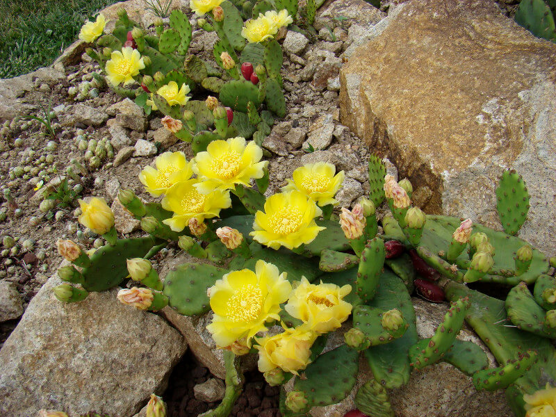
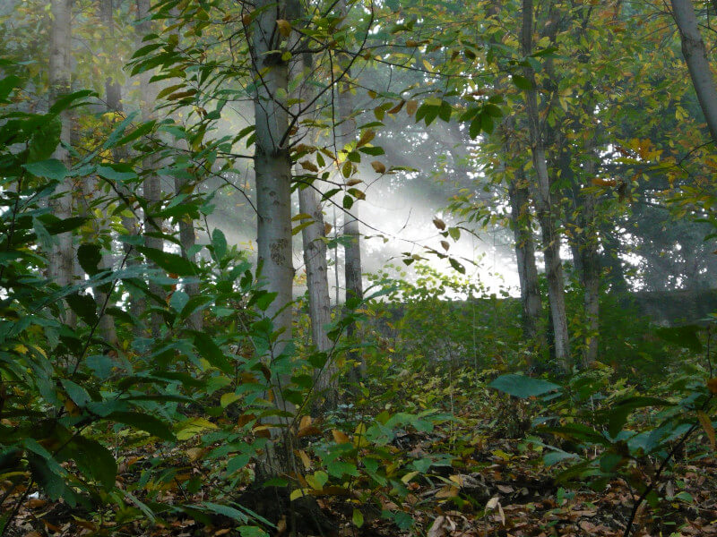
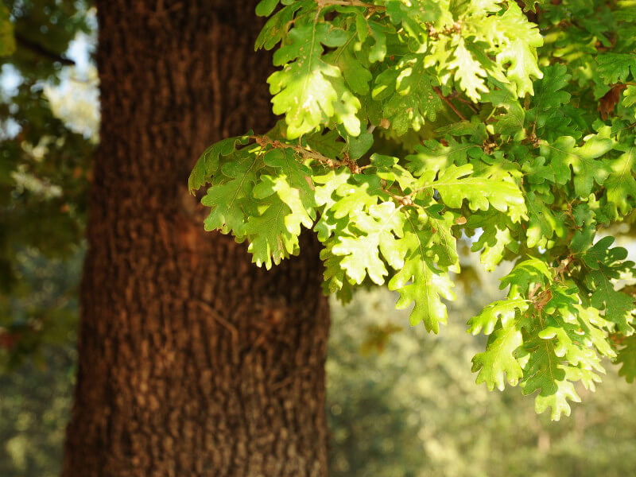
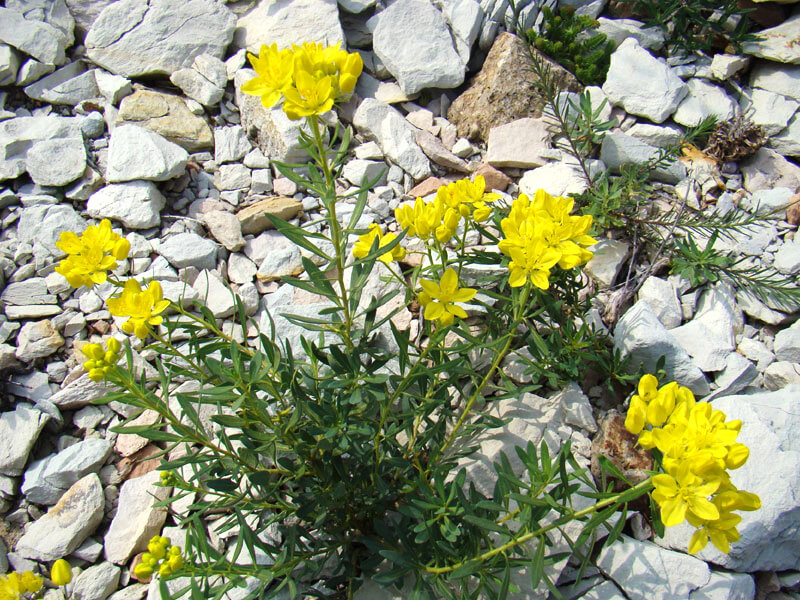
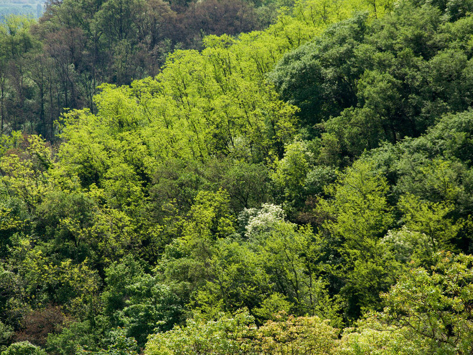

Home
>> Natura e Storia
>> Flora
Flora
Nei Colli Euganei è presente un numero sorprendente di specie vegetali.
L'origine geologica dei terreni, la morfologia dei rilievi, responsabile di microclimi e biotopi contrastanti,
l'isolamento da altri gruppi montuosi e le alterne vicende climatiche legate ai cicli glaciali, sono i principali
artefici della grande diversificazione della flora euganea. Qui vivono, a stretto contatto, specie adattate
al caldo e altre di carattere montano: percorrendo un giro attorno a uno dei tanti coni vulcanici, si osserva
come, al variare dell'esposizione, vivano a stretto contatto vegetazioni d'ambiente caldo arido (termofile)
accanto ad altre a carattere montano (microtermiche) o submontano.
La pseudomacchiamediterranea
Affine alla classica macchia mediterranea, caratterizza il distretto euganeo, ed è costituita da una vegetazione quasi impenetrabile
di piante a basso fusto per lo più sempreverdi quali leccio, corbezzolo, erica arborea, cisto, terebinto,
ginestra ed asparago pungente. Distribuita a macchia di leopardo, si sviluppa su terreni vulcanici rupestri,
esposti a sud, assolati ed aridi. In alcune aree rupestri, presso il Monte Ceva di Battaglia, la Rocca di
Monselice e l'Oratorio di S. Antonio abate sul Monte Madonna, troviamo il fico d'india nano (Opuntia humifusa),
vero e proprio cactus in miniatura, originario degli altipiani rocciosi dell'America centrale.

Flora pseudomacchia- Opuntia humifusa (foto di PR Colli Euganei)
Si sviluppa nei versanti vulcanici rivolti preferibilmente a nord, su terreno siliceo, fresco e profondo. Il sottobosco,
normalmente ricco di humus e relativamente umido, presenta numerose specie erbacee a fioritura precoce quali:
bucaneve, dente di cane, elleboro, anemone fegatella, aglio orsino, sigillo di Salomone, narciso, mirtillo
nero, o i rari e preziosi gigli martagone e di S. Giovanni; incantevoli tracce di flora alpina, quasi impensabili
in un ambiente collinare così profondamente condizionato dalla millenaria presenza dell'uomo. Sono presenti,
piuttosto localizzati, maggiociondolo, fior d'arancio, sorbo montano faggio e qualche betulla.

Castagneto (foto di PR Colli Euganei)
Occupa parte dei versanti esposti a mezzogiorno, su terreno poco profondo e asciutto, ben riscaldato povero o degradato,
di preferenza calcareo, pur non mancando nei distretti silicei. Il querceto, di aspetto aperto e luminoso,
presenta frequenti radure vivacizzate da una varia mescolanza di specie erbacee d'ambiente arido. Si presenta
come una boscaglia mista; alla roverella dominante si affiancano: carpino nero, orniello, albero di Giuda,
bagolaro, ciavardello e, tra i cespugli, lo scotano le cui foglie in autunno accendono i colli di infinite
sfumature. Nel sottobosco, abbastanza soffice e ricco di humus compaiono: pungitopo, biancospino, ginepro,
ligustro, erica, madresilva. Meno esteso del castagneto attualmente il bosco di querce termofile occupa le
zone meno frequentate e più intatte dal punto di vista naturalistico.

Quercia roverella (foto di PR Colli Euganei)
Presenti soprattutto nella zona meridionale dei Colli, su gran parte delle ondulazioni calcaree, tra Arquà
Petrarca,Valle S. Giorgio e Baone, questi prati derivano dall'abbandono di coltivi e pascoli poco produttivi,
e vengono chiamati "vegri". In continua evoluzione verso la ricostituzione della boscaglia originaria,
sono costituiti da specie erbacee amanti del secco, soprattutto graminacee, composite spinose e leguminose,
mentre le aree abbandonate da più tempo e talvolta con un terreno molto arido, ospitano sparsi cespugli
dal carattere rustico e pioniero, come biancospino, pruno spinoso, rosa canina, ginepro, viburno, ginestra,
che preparano il terreno all'arrivo di roverella, carpino nero e orniello.
Poche e preziose sono le stazioni di Ruta patavina (Haplophyllum patavinum), la specie più importante del
patrimonio floristico euganeo; oltre venti sono le specie di orchidee spontanee dalle forme suggestive
e bizzarre, tra cui l'orchidea farfalla, la vesparia, la maggiore, la scimmia, il barbone, la manina
rosa e il fior di legna.

Ruta padovana (Haplophyllum patavinum L. G. Don fil.) (foto di PR Colli Euganei)
La robinia è pianta estranea alla flora europea; originaria della costa orientale del nord America, importata agli inizi
del '600 come specie ornamentale. La sua rapida diffusione le ha permesso di conquistare un'ampia parte di
territorio a scapito dei boschi originali. Una delle cause di questo è l'eccessivo sfruttamento del territorio
e l'abbandono dei terreni coltivati, nei quali la robinia si è insediata con la velocità delle infestanti,
formando in breve tempo boscaglie piuttosto monotone, con pochissime altre piante arboree e cespugli, tra
i quali sambuco e altre specie che tipicamente segnano il degrado, come rovi e vitalba. Il sottobosco, altrettanto
povero, vede la crescita di aglio orsino, anemone bianca, viola, lampascione, gigaro ed elleboro.

Boscaglia di robinia (foto di PR Colli Euganei)